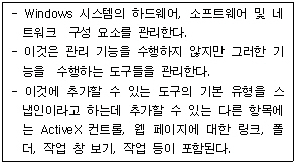
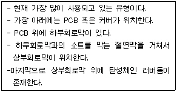

PC정비사-1급 (2009-04-05 기출문제)
1과목: PC운영체제
1. 에러를 자신이 찾아 수정할 수 있는 코드는?
- 패리티 코드(Parity Code)
- 해밍 코드(Hamming Code)
- 그레이 코드(Gray Code)
- BCD코드(Binary Coded Decimal)
(정답률: 70%)

2. Windows XP에서 시스템에 설치된 하드웨어 구성과 소프트웨어 설정에 관한 각종 정보를 담고 있는 일종의 데이터베이스는?
- Driver
- Register
- Registry
- Access
(정답률: 69%)
3. Windows XP에서 사용하는 단축키 기능에 대한 설명이 옳지 않은 것은?
- Ctrl + X : 잘라내기
- Alt + F4 : 프로그램 종료
- Ctrl + A : 시작메뉴 호출
- Alt + Enter : 등록정보 보기
(정답률: 78%)
4. 휴지통에 대한 설명 중 올바른 것은? (단, Windows 기본 제공 이외의 프로그램은 설치되어 있지 않음)
- 휴지통 비우기를 실행한 후에도 파일을 다시 복구할 수 있는 기능이 휴지통의 파일메뉴에 있다.
- 파일을 휴지통에 보관하지 않고 바로 지울 수 있는 단축키가 있다.
- 플로피디스크에 있는 파일이나 네트워크상의 파일도 삭제되면 자동으로 휴지통에 보관되어진다.
- 휴지통에 보관 중인 파일은 복원을 따로 하지 않아도 바로 사용이 가능하다.
(정답률: 75%)
5. Windows XP에서 사용할 수 없는 파일 시스템은?
- NTFS
- FAT16
- EXT2
- CDFS
(정답률: 78%)
6. Windows XP의 제어판 관리 도구에 있는 도구 중에서 로컬 컴퓨터는 물론 원격 컴퓨터에 연결하여 컴퓨터의 각종 설정을 변경하거나 정보를 찾아볼 수 있는 도구는?
- 로컬 보안 정책
- 서비스
- 컴퓨터 관리
- 이벤트 뷰어
(정답률: 64%)
7. Windows XP의 제어판에 있는 기능 중 문자 반복 시간과 커서 깜박임 속도 등을 지정할 수 있는 것은?
- 마우스 등록 정보
- 화면 배색
- 키보드 등록 정보
- 디스플레이 등록 정보
(정답률: 78%)
8. Windows XP에서 Windows에 발생할 수 있는 장애를 빠르게 극복하기 위하여 미리 준비해 둔 이전의 시스템 상태로 되돌리는 기능은?
- 시스템 복원
- 조각모음
- 하드디스크 정리
- 시스템 장애
(정답률: 87%)
9. FAT를 NTFS로 변환하기 위한 올바른 명령어는?
- CONVERT C: /FS:FAT32
- CONVERT C: /FS:NTFS
- CONVERT /FS:NTFS C:
- CONVERT /FS:FAT32 C:
(정답률: 79%)
10. 다음은 무엇에 대한 설명인가?

- 시스템 도구
- Microsoft Management Console
- 제어판
- 보조프로그램
(정답률: 60%)
11. Windows XP에서 기본적으로 제공하는 프로그램들이다. 잘못 연결된 것은?
- 인덱싱 서비스 - ciadv.msc
- 장치관리자 - dfrg.msc
- 시스템 모니터 - perfmon.msc
- 공유폴더 - fsmgmt.msc
(정답률: 60%)
12. Windows XP의 프로그램 추가/제거에는 4가지의 탭이 있다. 4가지 구성 탭에 해당하지 않는 것은?
- 프로그램 변경/제거
- 새 프로그램 추가
- Windows 구성요소 추가/제거
- 하드웨어 프로필
(정답률: 87%)
13. 레지스트리를 편집할 때의 주의 사항으로 잘못된 것은?
- 편집하기 전에 레지스트리를 백업한다.
- 필요 없는 키를 삭제하기 전에 삭제할 키를 저장한다.
- 레지스트리를 편집할 때 레지스트리 편집기에서 내용을 수정하면 바뀐 내용이 곧바로 저장된다는 것을 주의 한다.
- 새로운 레지스트리 키 생성 시, 키의 이름은 대소문자를 구분하므로 반드시 주의하여 입력해야 한다.
(정답률: 75%)
14. Windows XP의 인터넷 정보 서비스(IIS)에 기본적으로 설정되는 HTTP 오류 코드와 의미가 잘못 연결되어 있는 것은?
- 400 : Bad request, 클라이언트의 잘못된 요청으로 처리할 수 없음
- 401 : Unauthorized, 클라이언트의 인증 실패
- 403 : Forbidden, 접근이 거부된 문서를 요청함
- 404 : Request-URI too long, URL이 너무 김
(정답률: 59%)
15. 운영체제가 처리해야 할 긴급 상황 또는 돌발 상황을 통지하는 방법은?
- 시그널
- 인터럽트
- 세마포어
- 가상 메모리
(정답률: 80%)
2과목: PC주변기기
16. VGA에서 디지털 신호를 아날로그 신호로 변환하는 역할을 하는 것으로 이것에 의해서 변환된 전압을 컬러 모니터의 전자총에 보내 실제 화면에 VGA에서 보낸 색상이 표시되도록 하는 역할을 하는 것은?
- RAM
- BIOS
- RAMDAC
- ROM
(정답률: 78%)
17. AGP 8X에 대한 특징들 중에서 올바르지 않은 것은?
- AGP 4X에 비해 2배 넓은 2.1GB/sec의 대역폭을 제공한다.
- 66MHz의 CLK 신호 1주기에 8번의 데이터를 전송하는 ODR(Octa Data Rate) 기법을 사용하여 메모리 주소와 데이터를 전송한다.
- 신호 전압이 낮아짐으로 인해 버스의 데이터 전송에 소비되는 전력량이 줄어들게 된다.
- High Priority Transaction과 Long Type Transaction 기능이 추가되었다.
(정답률: 57%)
18. 아래에서 설명하는 키보드의 접점방식은?

- 순수 기계식 스위치 타입(Pure Mechanical Switch Type)
- 폼 엘레멘트 타입(Form Element Type)
- 멤브레인 스위치 타입(Membrane Switch Type)
- 캐패시터 스위치 타입(Capacitive Switch Type)
(정답률: 63%)
19. 갑작스런 정전에도 컴퓨터에 전원을 계속 공급해 줄 수 있는 장치는?
- Power Saver
- IPS
- UPS
- Power Supply
(정답률: 84%)
20. AWARD BIOS의 Chipset Features Setup의 Parallel Port Mode에 대한 설명 중 잘못된 것은?
- ECP : 양방향 병렬 통신을 지원한다.
- EPP : 단방향 병렬 통신을 지원한다.
- SPP : 표준 모드로서 ECP나 EPP 모드를 지원하지 않는 구형 프린터에서 주로 사용한다.
- ECP/EPP : 센트로닉스를 포함하여 현행 신호 전송방법들의 지원을 위한 IEEE 1284 표준의 일부이다.
(정답률: 67%)
21. CPU의 성능을 판단하는 기준으로 적절치 않은 것은?
- 시스템 버스 클록과 L2 캐시 용량
- L2 캐시와 CPU간 처리 속도
- 시스템 복구 여부
- 제조 공정
(정답률: 85%)
22. 키보드 내의 박막들 사이에서, 키를 누르는 물리적인 힘에 의해 접점이 붙어 도전이 되면, 어떤 키에 대응되는 접점에서 도전이 되었는지를 확인하는 역할을 하는 것은?
- Buffer
- 로직 보드
- Membrane
- Bus
(정답률: 54%)
23. 운영체제에 아무런 이상이 없이 빠른 속도로 그래픽 카드를 제어할 수 있는 표준 규격이 아닌 것은?
- DirectX
- Open GL
- DCI
- DMA
(정답률: 77%)
24. 비디오 카드를 구성하는 요소가 아닌 것은?
- 커넥터
- 비디오 램
- DAC
- LCD
(정답률: 85%)
25. 동영상 기술인 MPEG(Moving Picture Experts Group)에 대한 설명으로 옳지 않은 것은?
- MPEG는 1998년 ISO 및 IEC 산하에서 멀티미디어 표준의 개발을 목적으로 설립된 동화상 전문가 그룹이다.
- ITU 산하의 VCEG와 함께 H.264/AVC 표준을 공동 제정하고있다.
- MPEG는 손실 압축 방법을 사용하며 JPEG의 압축 기술인 영상의 중복성을 제거하는 방법을 사용한다.
- MPEG-4는 MPEG-3을 더욱 개선시킨 기술로 전화선을 이용한 화상회의 시스템과 동영상 데이터 전송 목적으로 사용된다.
(정답률: 67%)
26. 개인컴퓨터에 다중의 주변장치를 쉽게 통합시키고자 개발된 Bus 방식으로 각 주변 장치간의 직접적인 연결이나 허브를 통한 연결 하에서 작동하는 Bus 방식은?
- PCI
- USB
- ISA
- EISA
(정답률: 70%)
27. 컴퓨터의 성능을 결정하는 것은 CPU지만, 메인보드도 다른 장치들간의 데이터 흐름을 제어하는 칩셋에 따라 성능이 결정된다. 그렇다면, 이 메인보드 칩셋을 제어하는 소프트웨어는?
- BIOS
- CMOS 셋업 프로그램
- 운영체제
- Cache
(정답률: 72%)
28. 특정 해상도나 작업 도중에 모니터 화면에 얼룩이 지고 물결 모양의 나선이 나타나는 현상은?
- 모아레
- 핀쿠션
- 버닝
- 방자
(정답률: 82%)
29. 사운드 카드 소리를 내는 방식에 따라 분류할 때 이에 해당되지 않는 방식은?
- FM 방식
- PCM 방식/MIDI
- full duplex 방식
- wavetable 방식
(정답률: 74%)
30. 미국의 애플 컴퓨터가 제창한 시리얼 인터페이스 규격으로PC 주변장치와의 인터페이스 중 고속을 요하는 HDTV, 디지털 캠코더 영상장비 등을 연결하는데 사용하는 인터페이스는?
- EIDE
- IEEE 1394
- SCSI
- USB
(정답률: 66%)
3과목: 디지털 논리회로
31. ASCII 부호는 몇 비트로 구성되어 있는가?
- 6비트
- 7비트
- 8비트
- 9비트
(정답률: 70%)
32. 10진수 10를 2진수로 표현하기 위하여 필요한 Bit 수는?
- 1 Bit
- 2 Bit
- 3 Bit
- 4 Bit
(정답률: 80%)
33. 중앙처리장치(CPU) 내에서 계산의 중간 결과를 저장하는 레지스터는?
- 프로그램 카운터
- 스택 포인터
- 어큐뮬레이터
- 인덱스레지스터
(정답률: 56%)
34. 두개의 입력 모두 0(low)이 입력될 때만 출력이 1(high)이 되는 논리회로는?
- NAND
- NOR
- AND
- OR
(정답률: 62%)
35. 몇 개의 데이터 입력을 받아들여 하나를 선택하여 단일 출력 선으로 연결하는 조합회로는?
- 멀티플렉서
- 레지스터
- D/A 변환기
- 카운터
(정답률: 100%)
4과목: PC유지보수
36. 그래픽카드는 모니터에 나타낼 신호를 출력해주는 장치이다. 그래픽카드 선택시 유의 사항으로 잘못된 것은?
- 파워 서플라이용 그래픽 카드 소모 전력량을 충분히 고려한다.
- 메인보드에서 지원하는 슬롯 규격을 확인하여 올바른 것을 선택한다.
- 처리속도가 빠른 것을 선택한다.
- 프레임 버퍼(메모리)는 작은 것을 선택한다.
(정답률: 79%)
37. 컴퓨터 부팅 중에 ‘BIOS Check Sum Error' 메시지가 출력되었을 때 이를 해결하는 방법으로 올바른 것은?
- 메인보드의 배터리를 교체한다.
- 키보드 커넥터를 확인한다.
- 메인 메모리를 교체한다.
- CPU를 교체한다.
(정답률: 76%)
38. 아래 에러 메시지는 컴퓨터 부팅시 나타나는 것들이다. 이들 중 성격이 다른 하나는?
- Parity Error
- Base 64KB Memory Failure
- 8042-Gate A20 Failure
- Refresh Failure
(정답률: 63%)
39. 컴퓨터 부팅 시 CD-ROM 드라이브를 먼저 읽게 하려고 한다. 가장 적절한 조치내용은?
- 시스템 정보 프로그램에서 설정한다.
- 디스크 검사(Scandisk)를 한다.
- CMOS Setup을 바꾼다.
- Autoexec.bat 파일을 수정한다.
(정답률: 74%)
40. PC에서 컴퓨터 바이오스와 운영체계에게 PnP 장치들과의 통신을 위한 정보를 제공하는 데이터는?
- ESCD(Extended System Configuration Data)
- NVRAM(Non-Volatile RAM)
- DMA
- CMOS ROM
(정답률: 71%)
41. DLL(Dynamic Link Library) 파일 관련 오류 발생 시 보호된 파일을 찾아내는 명령어는?
- sfc/scannow
- scanreg/restore
- sys A:C:
- convert C:/FS:NTFS/X
(정답률: 85%)
42. 사운드 카드에서 소리가 나지 않을 때 점검할 사항이 아닌 것은?
- 사운드 카드의 드라이버 설치 확인
- 사운드 카드에 스피커 연결 확인
- 사운드 카드에 마이크 연결 확인
- 사운드 카드와 다른 장치의 자원 충돌 확인
(정답률: 91%)
43. 컴퓨터 시스템에서 BIOS 설정을 통해 부팅 시 암호를 설정했다가 암호를 분실한 경우, 가장 적절한 수리 방법은?
- 메모리를 모두 제거한 후 다시 장착한다.
- I/O 카드와 VGA 카드, CPU를 제거한 후 다시 장착한다.
- 메인보드에 장착된 배터리를 제거한 후 충분한 시간이 지난 뒤 다시 장착한다.
- 컴퓨터 전원 스위치의 ON/OFF 동작을 반복 해준다.
(정답률: 78%)
44. 컴퓨터 부팅과정 중 메모리를 테스트 하는 과정이 있다. 이에 대한 설명으로 옳은 것은?
- 장착된 메모리가 정확하게 동작을 하는지 확인하는 과정이다.
- 메모리의 용량이 필요이상으로 많이 장착되어 있기 때문이다.
- 컴퓨터 운영 중 작동상의 에러이다.
- Windows 제어판에서 가상 메모리 크기를 실제 메모리의 2배로 설정하면 메모리 테스트과정이 생략된다.
(정답률: 80%)
45. CTRL+ALT+DEL 키를 누르면 작업관리자가 실행된다. 작업관리자에서 확인할 수 없는 사항은?
- 성능
- 사용자
- 프로세스
- 하드디스크
(정답률: 89%)
46. 시스템에 이상이 있어 포맷 후 Windows를 다시 설치해도 해결이 되지 않는 경우는?
- Windows 시스템 파일에 문제가 있어 부팅이 되지 않은 경우
- 바이러스 감염 후 백신으로 치료를 했으나 핵심 파일이 손상되어 사용 중의 잦은 다운이나 에러가 발생하는 경우
- 메인보드를 교체한 후 부팅이 되지 않을 경우
- 하드디스크에 물리적인 배드섹터가 있어 이를 제거해야 할 경우
(정답률: 67%)
47. 램 상주 프로그램이 지나치게 많아 프로그램이 메모리 부족으로 실행되지 않을 때 나타나는 메시지는?
- CMOS Failed
- Out of Memory
- Invalid Command
- NO CNTRLR PRESENT
(정답률: 72%)
48. Over Clocking에 대한 일반적인 설명 중 잘못된 것은?
- CPU의 클럭 설정은 점퍼 비율 딥스위치를 조정하거나 BIOS SETUP에서 설정할 수 있다.
- 오버클럭킹을 사용하게 되면 CPU의 온도가 오버클럭킹을 하기전보다 높아지므로 주의한다.
- 오버클럭킹에는 외부 클럭을 올리는 방법과 클럭 배수를 올리는 방법이 있다.
- 메인보드에서 지원하는 클럭 수 보다 높게 오버클럭킹이 가능하다.
(정답률: 77%)
49. 컴퓨터 조립 작업에 대한 설명으로 잘못된 것은?
- 모든 부품은 충격을 주거나 무리한 힘을 가하지 않는다.
- 쿨링팬의 방열판과 CPU는 완전히 밀착시키지 않고 적당히 간격을 띄운다.
- 시스템 내부의 부품 등은 자성에 약하므로 자성이 있는 물건을 가까이하지 않는다.
- 110[V]/220[V]조정 스위치가 있는 전원 공급기는 사용전압에 맞도록 조정한다.
(정답률: 76%)
50. Windows 사용 중 치명적인 오류가 불규칙적으로 발생한다. 이러한 현상은 특정 프로그램을 실행할 뿐 아니라 광범위하게 발생한다. 이에 대한 일반적인 원인으로 잘못된 것은?
- 파티션 설정이 잘못되었다.
- 중요한 H/W 또는 S/W와 Windows의 호환성 문제이다.
- Windows의 시스템 정보 파일에 오류가 발생하였다.
- 중요 드라이버 파일에 오류가 발생하였다.
(정답률: 86%)
5과목: PC네트워크
51. 종합정보통신망(ISDN)의 영어 어원은?
- Internet Services Digital Network
- Integrated Services Data Network
- Integrated Services Digital Network
- Internet Services Data Network
(정답률: 62%)
52. 네트워크에서 인터넷을 통하여 어떤 한 컴퓨터에서 다른 컴퓨터로 파일을 송수신 할 수 있도록 지원하는 프로토콜은?
- HTTP
- FTP
- TELNET
- SMTP
(정답률: 70%)
53. 라우터가 정의 되어있는 OSI 모델의 계층은?
- 세션 계층
- 표현 계층
- 응용 계층
- 네트워크 계층
(정답률: 76%)
54. 인터넷의 모태가 된 ARPANET에서 사용되던 프로토콜로 현재 표준화되어 광대역 네트워크의 표준으로 사용되고 있는 것은?
- POP
- TCP/IP
- SMTP
- HTTP
(정답률: 73%)
55. 외부의 불법 침입으로부터 내부 자료를 보호하고 외부로부터 유해 정보 유입을 차단하기 위한 정책과 이를 지원하는 하드웨어 또는 소프트웨어를 뜻하는 것은?
- 브리지
- 게이트웨이
- 방화벽
- 트랜시버
(정답률: 89%)
56. 목표 서버와 공격시간대를 정해서 직접적으로 공격함으로써 결국 웹서비스를 제공하지 못할 정도로 시스템이 느려지거나 다운되도록 공격하는 방법은?
- DoS
- IDS
- Hacking
- VPN
(정답률: 87%)
57. 네트워크상의 호스트는 고유의 주소를 가진다. 인터넷 상의 도메인 이름들의 위치를 알아내기 위해 IP 주소로 바꾸어주는 시스템은?
- IP
- TCP
- PHP
- DNS
(정답률: 75%)
58. 컴퓨터들간에 통신을 하기 위해 필요한 사항을 미리 정해 놓은 통신규약은?
- Telnet
- Protocol
- IP
- PHP
(정답률: 75%)
59. SNMP(Simple Network Management Protocol)에 대한 설명으로 올바른 것은?
- 통신 중에 발생하는 오류의 처리와 전송 경로 변경 등을 위한 프로토콜
- 패킷 주소를 해석하고 경로를 결정하여 다음 호스트로 전송하는 프로토콜
- 네트워크 관리 및 네트워크 장치와 그들의 동작을 감시, 통할하는 프로토콜
- 인터넷 주소(IP)를 물리적 하드웨어(MAC) 주소로 변경해주는 프로토콜
(정답률: 64%)
60. 메일 서비스와 가장 관계가 없는 것은?
- SMTP
- FTP
- POP3
- MIME
(정답률: 85%)